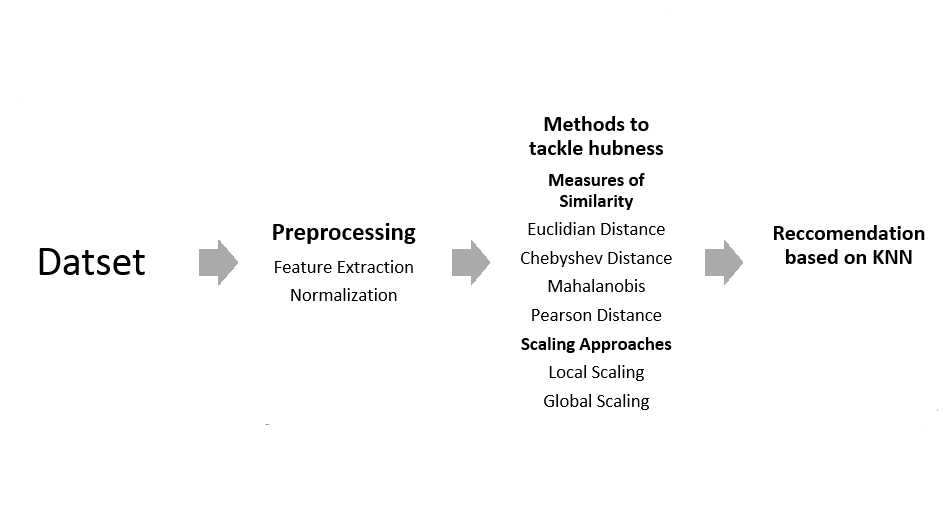
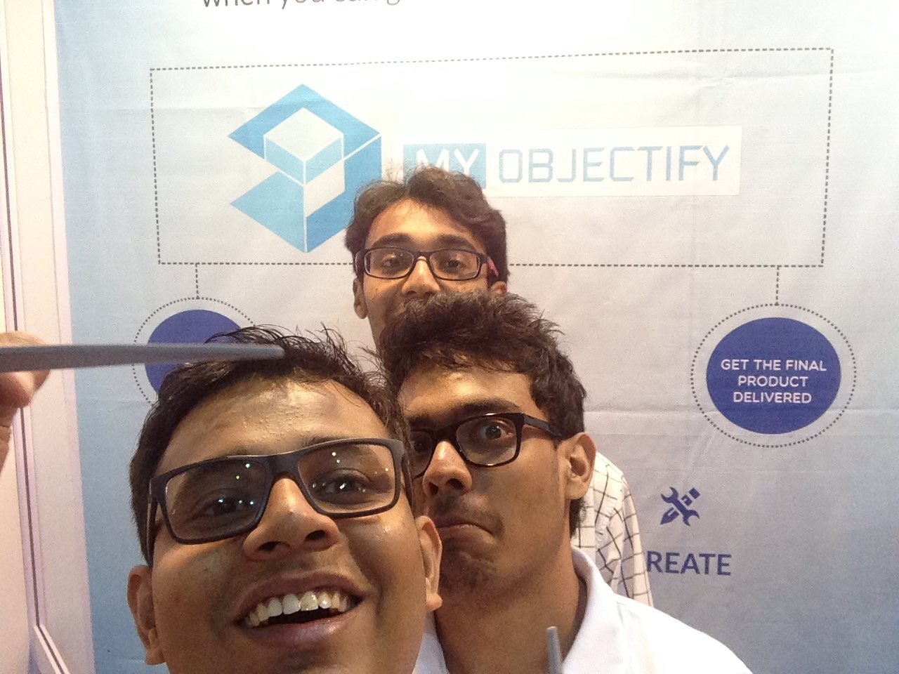
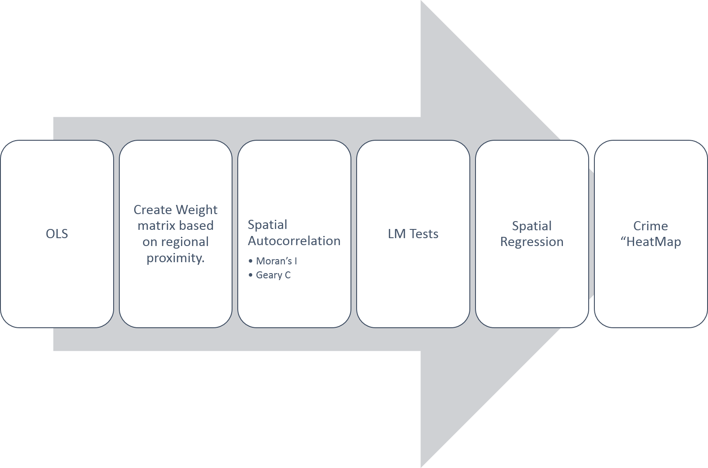

Data Analyst. Aspiring Entrepreneur. Wannabe Quizzer.
I try to understand humans through data and want to build technology that impoves our lives.
Yesterday is history, tomorrow is a mystery but today is a gift.
Data Analyst at Exl Services
Got placed on day one during campus placements at EXL services. Currently working with Wolters Kulwer.
Research Visitor at Academia Sinica
Invited by Dr. SW Chen to Taiwan.
This time work on a credit card data and phone logs collected from over a million customers (over 40 GB of Big Data!).
Found relationships between financial troubles on Credit Card bills and call based metrics.
Solo trek
Climbed up ~4000m of the Indrahar-Pass trek solo over a period of two days. Got down as well.
Researcher at Rutgers University
Flew to USA to intern at Rutgers University with Dr. Vivek Singh
on the Rutgers Wellbeing Study.
Analysed Spatio-temporal social data captured via mobile phone over three months from 90 students.
Found phone based behavioural markers (Phoneotypes) that can explain human cooperation with a very high accuracy.
Thus, co-wrote a paper
which got accepted in Ubicomp'16.
Cultural Events
As the overall coordinator of the Quiz Club,
led the IITK contingent to Nihilanth the inter IIM IIT quiz meet (my team qualified for the first time in four years!).
Had won several intra/inter college quizzes.
Mumbai Comic Con
Represented MyObjectify at Mumbai Films and Comicon'14 (MFCC) where we
scanned people using a Kinect and 3D printed a MiniMe for them. Got coverage from local press.
Intro to Machine Learning
Did my first project in Machine Learning, trying to predict the use of
BikeShare in Washington Dc using past use and weather data.
Achieved a global rank of 588 (current rank) out of ~4000 submission.
Blog for a Cause
Managed to write an
article about cows which won Blog for a Cause, a nationwide social blogging contest.
Glorified Spelling Checker
Joined the Creative Cell of the Science and Technology Council core team
of IIT Kanpur. Manually corrected hundreds of grammatical errors to successfully publish the SnT magazine Scientia
(no web version sorry). Also, served as the editor for
Meander
the literary magazine of IIT Kanpur.
Entrepreneurship
MyObjectify the first ever community
cum Marketplace to make 3D printing more accessible in India. I worked on the web-end to create the initial 3D renderer for
STL files, helped with the business plan, wrote marketing blogs and ordered lots of pizza.
The startup featured among the 10 best start-ups to feature at Disruptit, IIM Ahmedabad.
Pitch-ur-Product
Won the third prize in Pitch-ur-Product in E-summit'13, a nationwide Entrepreneurship Fest hosted at IIT Kanpur.
The product was a pipe cleaning bot designed over the summers as the part of the Robotics Club at IIT Kanpur.
I didn't tighten bolts, just wrote the pitch.
Student Mentor
Mentored three first year students for ESC101 which is a first level course in
Computing where they're taught basics of C language. Thankfully they passed the course (with above average grades).
Stumbled upon Economics, discovered CS
Got enticed by markets and interested in numbers. Switched major to Economics but
started taking CS courses instead. This helped me earn a minor degree in Artificial Intelligence.
IIT Kanpur
Cleared the IIT Joint Entrance Exam (JEE) with a 99.3 percentile among 500,000+ students which allowed me to study in the prestigious IIT, Kanpur and
live on one of the most beautiful campus in India as a Material Science student.
Felicitation
Awarded for overall outstanding scholastic achievement by the Ladnu Nagrik Parishad
having maintained podium positions in academics through high school.
I am Born
Born in the City of Joy, then Calcutta now Kolkata.
Predicting Financial Trouble using Phone Call Data
I was invited by Dr Sheng-Wei "Kuan-Ta" Chen of Academia Sinica,
Taiwan to conduct research in his Networks and Multimedia Labs.
The project was to find behavioural markers that can indicate financial trouble for an individual.
Abstract
Financial outcomes for individuals has been traditionally determined by past payment history.
Recently, researchers have used methods like time series and machine learning. Again, socio-economic status
has also been inferred from mobile phone activity data and some even found interconnection between social and
mobile features and spending behaviour. We decided to explore the possibility to predict financial trouble
using phone activity data.
Methodology and Resuts
After doing a careful initial analysis and purging redundant
users we ended with ~30,000 people who had trouble in at least
one month over the financial year. The data however was naturally
imbalanced so we had to use balancing techniques like SMOTE. We applied
several classification techniques like GBM, SVM, Naïve Bayes, and
created a model that can predict financial trouble in the upcoming 3 months
using just 9 months of previous data with a ~0.75 AUCROC and 73 % Accuracy.
We also found consistent results using different slots in the year.
The metrics involved were a combination of both Call based and Transaction based features.
Conclusion
Thus, our work is unique as we diverge from the traditional credit rating techniques that rely
heavily on past credit scores. We propose a hybrid method that can help people who do not have
an established credit history get credit cards and eventually loans. We are currently working to publish our results
Why was this fun?
Working on over 40 gb of combined data was taxing and taught me patience,
thankfully I had the support of a superfast workstation and talented colleagues.
This also gave me a wonderful opportunity to explore and appreciate the amazing culture of Taiwan and ride the fastest elevator in the world installed at Taipei 101.
Cooperative Phonetypes
In the summers of 2015, Dr Vivek K Singh
of Rutgers university gave me an opportunity to intern in his lab. The project was to understand why humans cooperate.
Abstract
Cooperation is a fundamental human concept studied across
multiple social and biological disciplines. Traditional
methods for eliciting an individual’s propensity to cooperate
have included surveys and laboratory experiments and
multiple such studies have connected an individual’s
cooperation level with her social behavior. We describe a
novel approach to model an individual’s cooperation level
based on her phoneotype i.e. a composite of an individual’s
traits as observable via a mobile phone. This phone sensingbased
method can potentially complement surveys, thus
providing a cheaper, faster, automated method for generating
insights into cooperation levels of users. Based on a 10-week
field study involving 54 participants, we report that: (1)
multiple phone-based signals were significantly associated
with participant’s cooperation attitudes; and (2) combining
phone-based signals yielded a predictive model with
AUCROC of 0.945 that performed significantly better than a
comparable demography-based model at predicting
individual cooperation propensities. The results pave the way
for individuals and organizations to identify more
cooperative peers in personal, social, and commerce related
settings.
Why this was fun?
This was the first time I had dedicated time wholly to research.
The intern gave me perspective about choosing research as a career option. It highlighted the perks of conducting research, i.e.
being able to do things at your own pace and read the topics you like.
I tasted bitter rejection as the paper got rejected at a CHI conference
and also felt the euphoria of acceptance at Ubicomp’16. Thus, writing
the paper taught me perseverance and I learned about the importance of being able to deliver a convincing argument in written words
I hate it when websites play the same song again and again and again.
So, my friend Saurav Prakash and I tried to create a better music recommendation system that recommends
niche songs as often as the popular ones.We tested out system on the million song dataset.
Abstract
We study the problem of hubness in the high dimensional data spaces. Recently been
attributed as a curse of dimensionality, hubness tends to make the nearest neighbour relations
asymmetric. Due to hubness, certain objects tend to be present in the nearest neighbour lists of
many other objects, but there are only a finite number of objects that are present in the nearest
neighbour lists of the hub objects. As a result, the recommendation systems that are based on
the similarity between songs recommend the hub elements repeatedly, while a large number of
songs, ‘orphans’, are never recommended. Through proper scaling methods, the neighbour
relations can be made more symmetric causing a reduction in the hubness.
Methodology

Conclusion
Overall, the best performance was obtained when the distance matrix was constructed using the
Pearson distance measure and using Local Scaling—for the 10,000 songs dataset, the number of
songs that were getting recommend was ~99%.
Why was this fun?
I love Spotify especially their Discover Weekly mix. So, I wanted to understand how recommender systems work and how I can improve one.
Making the poster on Latex and presenting it to professors and peers was an enriching experience.
MyObjectify is the first online 3D printing community in India which aims to bridge
the gap between talented designers and consumers so as to allow them to break away
from the limitations posed by conventional manufacturing.
We believe that this can be accomplished by providing a platform where users can interact
and iterate on the 3D design and then harness the power of additive manufacturing and rapid prototyping services,
particularly 3D printing, to bring their 3D designs to life.
Why was this fun?
The two years I spent with MyObjectify were awesome. The layer by layer manufacturing technology never ceased to amaze me.
The late night debugging sessions and qutiodian struggle of
running a startup perfectly epitomizes my time at IIT Kanpur.

P.S.
We also opened up a Mini ME stall at Mumbai ComicCon where we used a Kinect to 3D scan people’s heads and 3D print a miniature version of them.
Bicycle sharing programs have emerged as a global trend as an affordable,
convenient, and sustainable travel option with various benefits.
In this project, I tried different Machine Learning techniques on
the Kaggle problem: Forecast use of a city bikeshare system.
I used historical usage patterns with weather data in order
to forecast bike rental demand in the Capital Bikeshare program in Washington, DC.
I did project as a part of the Machine Learning techniques course and this was my first
project in ML. I learned how to do basic data analysis, do a feature selection and implement
standard prediction techniques like Random Forest, Logistic Regression, Mixture Models and SVM.
Also, achieving a closing global rank of 588(dropped 54 places) out of ~4000 entries for our submission on Kaggle was the cherry on the cake.
Almost at the end of my IIT Kanpur journey I decided to find the meaning of a
good life under the mentorship of Dr Debayan Pakrashi of the Economics Department.
The aim of this project was to examine the markers of a good life in from
of life satisfaction, relationship satisfaction, job satisfaction and satisfaction with children.
Then try to see which variables affect these markers with a focus on heath and personality.
I used the 2013 edition of the HILDA dataset
which has an average of 17000 individuals collected over a period of 12 years.
After identifying key socio-economic variables, I used a fixed effect regression model to find the importance of
each variable. Many variables like job stress, # previous relationships, #children appeared to have a significant
impact on life satisfaction while demographic variables like income, household type didn’t feature.
This project was completely different from the CS oriented projects I had done and introduced me to a different flavour of research and methodology.
Spatial Analysis of Crime in Uttar Pradesh
Intrigued by the high crime rate in Uttar pradesh, I pursue a data centric approach to find spatial connections on a district level.
Abstract
Uttar Pradesh (UP), the most populous state in India has been historically famous for its high
crime rate and lawlessness. In a 2012 survey, UP had been termed as the one of the "worst
states" in India in terms of law and order by the National Crime Records Bureau (NCRB). UP
is also notorious for its illegal arms trafficking and several illegal arms factories exist. I aim to find
the determinants of crime in UP and explore whether spatial patterns exist in the distribution of
crime over the state using a Spatial Model for cross-sectional data and thus highlight major crime “hotspots" in terms of regional proximity.
Methodology

Conclusion
After applying the various tests I concluded that there is low spatial correlation with
respect to crime in UP.
The crime rate is aptly explained by the socio-economic variables like unemployment and literacy in the OLS but since data collection is
only possible in urban cities we might not get the entire picture of crime in UP.
TA 101 was a first level Engineering Drawing course which was compulsory
for all first year students at IITK. Armed with cumbersome mini-drafters, we
had to draw orthographic projections of ellipses across sheets of white paper.
Needless to say, the whole exercise was enervating. So, during the summers of 2013 I
decided to unburden the freshers by designing a cool new digital drafter as part of the Des633A , New Product design course.
This introduced me to the heuristics of a new product design form ideation to prototyping.
I learned about Quality Function Deployment (QFD) method to model the product according
to user needs and the doing a STP to market the said product.
We even fabricated (and destroyed) a cool prototype for our drafter using an aurdino.
Echo: Educational app to learn Better Pronunciation
Echo an educational app to help children master English faster.
It randomly chooses a word from database and displays it in the form of flash cards on the screen.
It allows users to record their pronunciation which is assessed using tools like Google Speech2Text
API and Chromaprint library for audio fingerprinting. The user can also listen to the correct pronunciation
of that word from our database directly from the web app interface.
This was our submission for the Eduvate App-a-thon.
The aim of this project was to test the paper PERCEPTUAL ACCOUNT OF SYMBOLIC REASON,
by Landy et al, which propsed that symbols may act as targets for powerful perceptual and sensorimotor systems
I built a JavaScript application to replicate the experiments proposed in the paper and tested it on 20 first year students of IIT Kanpur.
The subjects were asked to do simple calculations like
8=2+3*y
Their response and response time was recorded. No personal data was collected.
We found some consistency with the original paper and our work was appreciated by Dr Landy himself.
This application analyse the moods of a person over a certain period of time based on her
updates on any social media platform. Tt will then plot a graph of the person’s mood swings against time
(the graph was made using YUI). It was also used to suggest music and images to a person according to his/her mood
in the Yahoo HackU competition.
This was made during a 24 hour hackathon by four sophomores high on Redbull.
This was my “hello world” project at IIT Kanpur.
People often reduce words to their phonetic equivalent non-dictionary words.
So book becomes buk, and great becomes gr8.
We tried to build a phonetic spell checker to correct such typographical errors, often made during texting.
We used the Metaphone algorithm to generate a list of close sounding words and then used the python NLTK library to implement N gram
to find the closest dictionary words and suggest it.
P.S. I thought Python was a snake before embarking on this one.